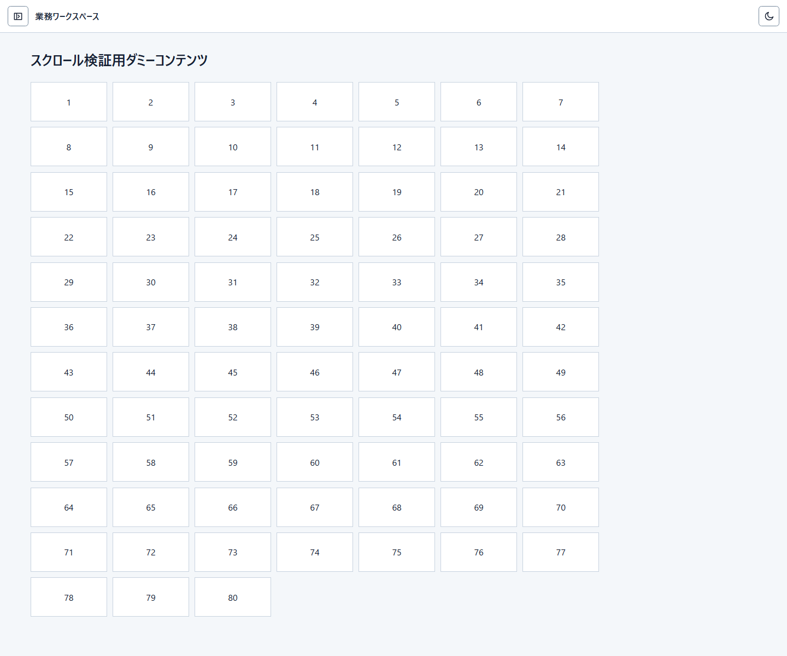
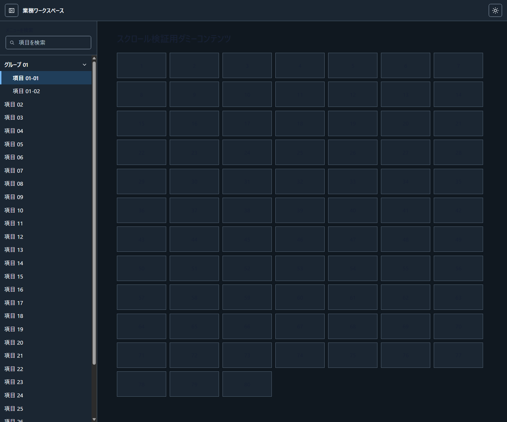
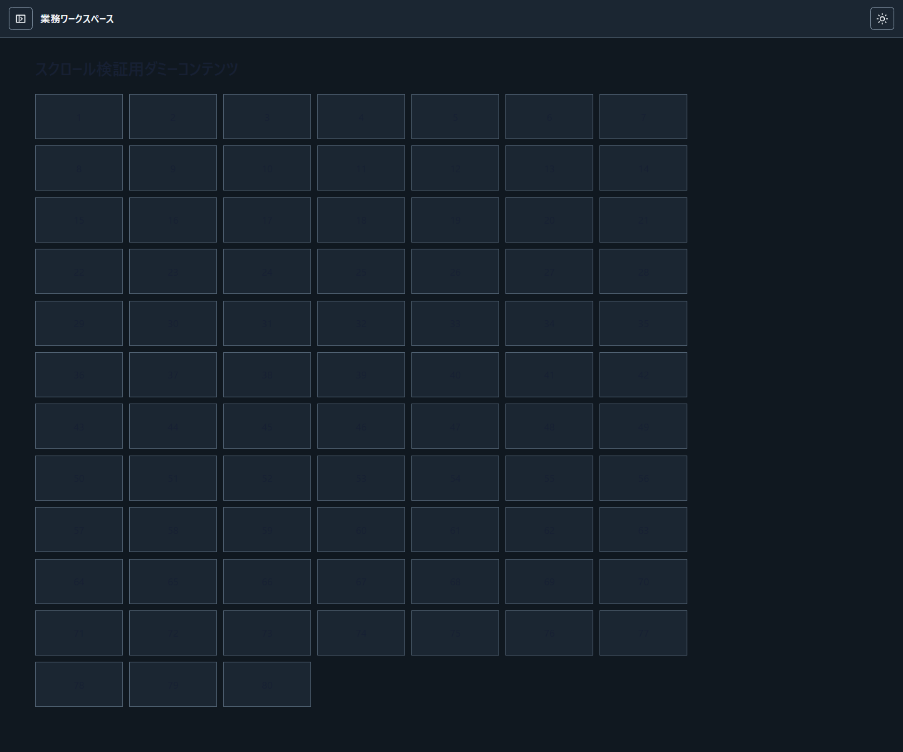
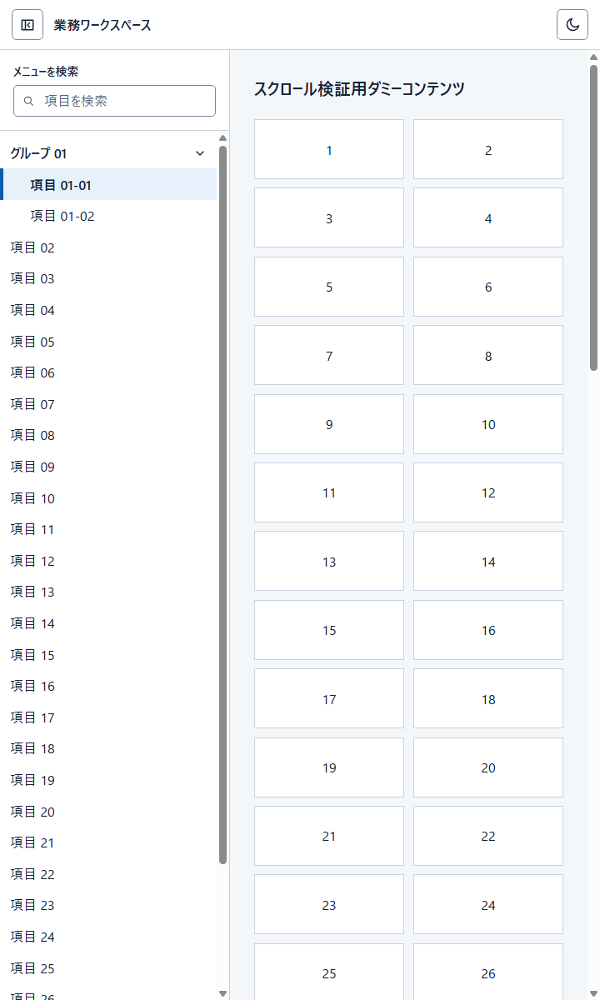

SHELL-001 / Research-selected example
Header-controlled, fully hideable left drawer
A button in the application header controls the left navigation drawer. Closing it removes the entire drawer, including its menu and icons; the main workspace takes the freed space. Unlike a compact navigation rail, nothing remains visible on the left. Compare the captures, then adapt the pattern to the target platform.
Drawer visibility
Light / two captures

Left navigation and main workspace occupy separate regions below the header.

The hidden drawer does not leave an unused strip in the workspace.
Theme and viewport samples
Three independent files

The same region structure in the dark palette.

Workspace expansion is preserved.

One experimental viewport capture, not an approved mobile policy.
Design intent
Relationships to preserve
- The application header remains identifiable while workspace content scrolls.
- The header owns the drawer toggle. Hiding the drawer removes all navigation UI, not just its labels, and returns the space to the workspace.
- Navigation and workspace scroll independently when both overflow.
- The current navigation item is distinguishable without color alone.
Decisions left to the product
- Real destinations, identity, permissions and business content.
- Whether navigation search, disclosure and palette controls are needed.
- Native control selection, focus behavior, responsive policy and accessibility verification.
- Exact colors, spacing, breakpoints, source HTML and framework.
Provenance and review limits
The five pictures are copied byte-for-byte from the owner-selected Attempt 23 / Run 1. This is a research selection, not a newly approved general design.
To inspect bounded interactions, see the historical runnable example and its contract. These images alone do not validate real mobile, assistive technology or native OS behaviors.